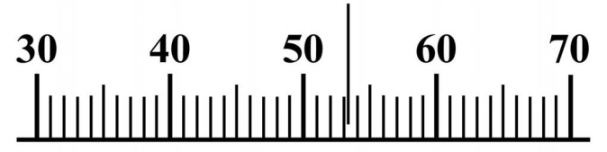
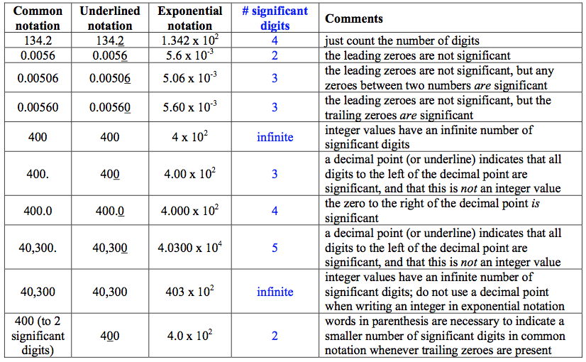

Significant digits#
Engineering measurements are generally accurate to at most only a few digits – three digits of accuracy is considered ‘’standard’’ for engineering analysis
The number of significant digits is defined as the number of relevant or useful digits in a measurement.
The number of significant digits is meaningful: 0.9, 0.90, 0.900 are all different
The best way is the standard exponential (scientific) notation (count the number of digits), \(1.23\times 10^{4}\)
Why it is important for measurements

The rightmost zero after the decimal point counts, 53.0 means we know more than just 53, we could also find 53.1 or 52.9.
if the rightmost zero is before the decimal point, e.g. in integeres 53200, we have difficulty to distinguish what is meaningfull so we better use scientific notation \(5.32 \times 10^4\)
The value is about 53, we can say even it’s 53.2 - by adding .2 we mean it’s a meaningful digit, i.e. we can measure things using this tool to the level of one digit after a decimal point, i.e. \(5.32 \times 10^{1}=0.532 \times 10^{2}\)
– So if the measure will be precisely on 53, we’ll still write 53.0 – that’s the important difference, it’s not an integer value 53 and not \(0.53 \times 10^{2}\) , but \(0.530 \times 10^{2}\) - three significant digits
Rules#
Non-zero digits are always significant. Thus, 2.2 has two significant digits, and 22.3 has three significant digits.
Zeroes:
Zeroes placed before other digits are not significant; 0.046 has two significant digits.
Zeroes placed between other digits are always significant; 4009 kg has four significant digits.
Zeroes placed after other digits but behind a decimal point are significant; 7.90 has three significant digits.
Zeroes at the end of a number: USE scientific notation to be clear:
\(8.200\times10^{3}\) has four significant digits
\(8.20\times10^{3}\) has three significant digits
\(8.2\times10^{3}\) has two significant digits
Calculations
In a calculation involving multiplication, division, trigonometric functions, etc., the number of significant digits in an answer should equal the least number of significant digits in any one of the numbers being multiplied, divided etc.
Thus in evaluating \(\sin(kx)\) where k = 0.097 m\(^{-1}\) (two significant digits) and x = 4.73 m (three significant digits), the answer should have two significant digits.
integers have \(\infty\) significant digits, e.g. a devices uses 1.2 kW, 2 devices use 2.4 kW.
When quantities are being added or subtracted,[ the number of decimal places]{style=”color: blue”} (not significant digits) in the answer should be the same as the least number of decimal places in any of the numbers being added or subtracted.
Keep One Extra Digit in Intermediate Answers#
When doing multi-step calculations, [keep at least one more significant digit in intermediate results than needed in your final answer]{.alert}.
For instance, if a final answer requires 2 s.d., then carry at least 3 s.d. in calculations.
If you round-off intermediate answers to only two digits, a result the second digit in your final answer might be incorrect. (This phenomenon is known as round-off error.)
The Two Greatest Mistakes Regarding Significant Digits:
Writing more digits in an answer (intermediate or final) than justified by the number of digits in the data.
Rounding-off, say, to two digits in an intermediate answer, and then writing three digits in the final answer.
An example#
Atmospheric pressure \(P_{atm}=101.3\) kPa
Gage pressure measured at point 1 is 1,3[5]{.underline}0 Pa
Gage pressure is defined as \(P_{gage}=P-P_{atm}\)
Calculate and report the absolute pressure at position 1:
\(P_{1}=101.\underline{3}+1.3\underline{5}0=\) (aligned at decimal point) = \(102.\underline{6}50\) kPa, i.e. the answer is:
\(P_{1}=102.6\) kPa
if you use the value for other estimates, e.g. density or temperature, use 102.65 kPa
Operations with signficant digits
Multiplication, division = first calculate, keep more significant digits, then round to the least number of significant digits (there is impossible to get “new” information beyond the known):
Division example:
\(\underline{3.0}\times10^{4}/1.15\times10^{4}=2.608695...=\underline{2.6}\)Multiplication example:
\(2.8723\times\underline{1.6}=4.59568=\underline{4.6}\)Integers do not matter:
\(3\times0.5=1.5\)
\(222\times22=4884\)
Summation/subtraction
Summation, subtraction - keep similar order of magnitude (all big ones separately from the small ones)
Work with the decimal point - shift first, then after the operation, round:
\(3.76+14.83+2.\underline{1}=20.69 \Rightarrow 20.\underline{7}\)
\(4.7832+1.234+2.\underline{02}=8.0372 \Rightarrow 8.\underline{04}\)
Problems are unavoidable when sum very different orders of magnitude:
\(1.2\underline{3}\times 10^{5}+0.5=12\underline{3}000.0+0.5=12\underline{3}000.5 \Rightarrow 12 \underline{3}000=1.23 \times 10^{5}\)
Summary table#

Examples#
603 vs 603. vs 603 \((\infty,3,2)\)
0.007 =\(7.\times10^{-3}\) (1), 1.005 (4)
0.01070 = \(1.070\times10^{-2}\) (4)
2.00/3.0=0.666666\(\ldots\)=0.67 = 6.7 \(\times10^{-1}\) but if you use it for other estimates, do not round now (!), 0.66667
134,290, 0.2875, 29.473 - round to 3 digits: 134,000 = 1.34 \(\times 10^{5}\), 0.288 = 2.88 \(\times10^{-3}\), 29.5
sum and answer to the proper number of significant digits:
134,290 + 0.2875 + 29.473 = ?
Solution, align decimal places: get 134319.7605 and round to the left-most least significant digits () = 134,320 = 1.3432 \(\times 10^{5}\)
multiply the first two and report: 134,290 \( \times\) 0.2875 = 38608.375 (if its intermediate, otherwise 5 digits \( \times \) 4 digits = 4 digits) = 38610